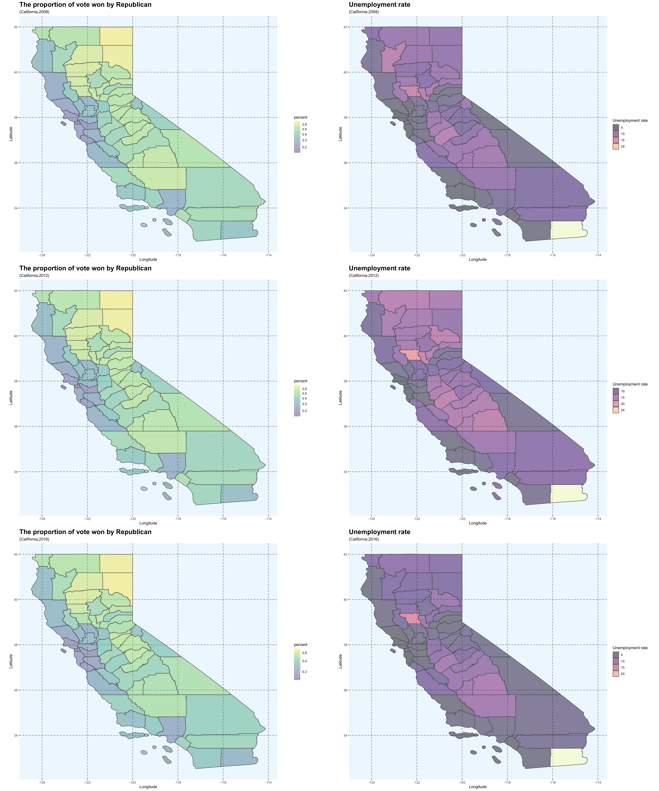
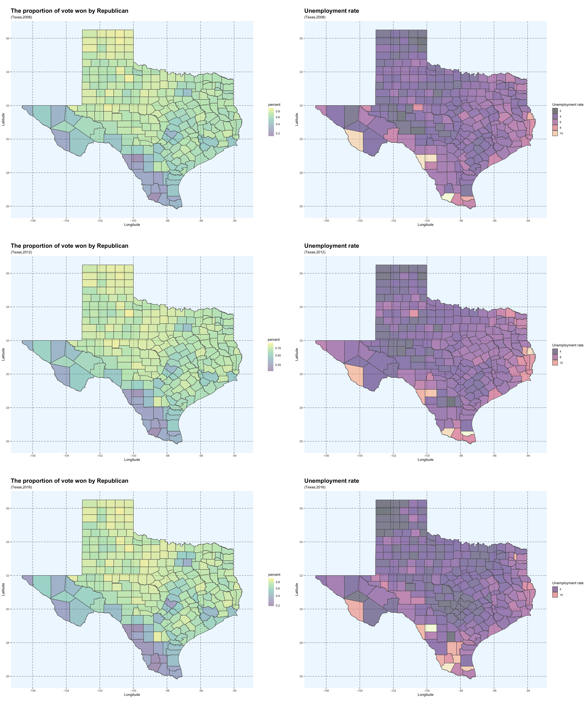
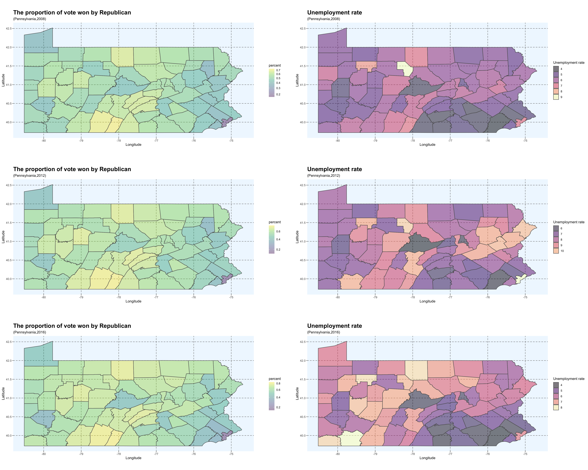

\(~\) In this assignment I will visualize historical US election data and unemployment rates across US counties using choropleths. I will create three 3x2 panels of choropleths, one each for Texas, California and Pennsylvania. The rows will correspond to the years 2008, 2012 and 2016, and the columns will correspond to the percent of the vote received either the Democratic or Republican candidate for president (your choice), and the unemployment rate in that year.
There are three data used for this assignment:
\(~\) \(~\)



\(~\) \(~\) \(~\) \(~\)
California: For California, we could observe that the middle east and south counties have relatively higher proportion of voting rate for democrat. Generally, in CA, higher proportion of voting rate for democrat relates to lower unnemployment rate. There's an outlier in the most south part of CA which has very high unemployment rate.
\(~\) Texas: For Texas, counties having higher proportion of voting rate for democrat generally have higher unemployment rate, and these counties concentrate on the east and south part of Texas. In the east side of Texas, there're also some counties with high unemployment rate, but the proportion of voting is not very high in this area.
\(~\) Pennsylvania: We could get some interesting findings in Pennsylvania. When we look at voting proportion, counties in the west have relatively higher proportion of voting. However, for the unemoloyment geographical plots, with time goes, PA has higher and higher unemployment rate. Especially in 2016, the unemployment problem runs deep.